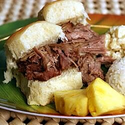

Oven Kalua Pork

Fire up the tiki torches -- it's time for a luau!
This delicious slow-roasted pork is rubbed with sea salt and liquid smoke to recall the glorious flavors of pig cooked in a traditional Hawaiian imu. Once cooked and cooled, it can be shredded and served with poi, yams or even on a bun. You may use ordinary sea salt for this recipe if the Hawaiian variety is unavailable.
Ingredients
- 5 pounds pork butt roast
- 1 tablespoon liquid smoke flavouring
- 2.5 tablespoons Hawaiian sea salt, divided
Steps
- Preheat oven to 325 degrees F (165 degrees C). Rub liquid smoke and 1 1/2 tablespoons of the salt into the skin of the pork. Wrap well in foil, and seal completely. Place in a roasting pan.
- Bake in the preheated oven until an internal temperature of 145 degrees F (63 degrees C) is reached, about 5 hours. Remove from oven and let cool before shredding. Sprinkle the shredded meat with the remaining 1 tablespoon of salt.